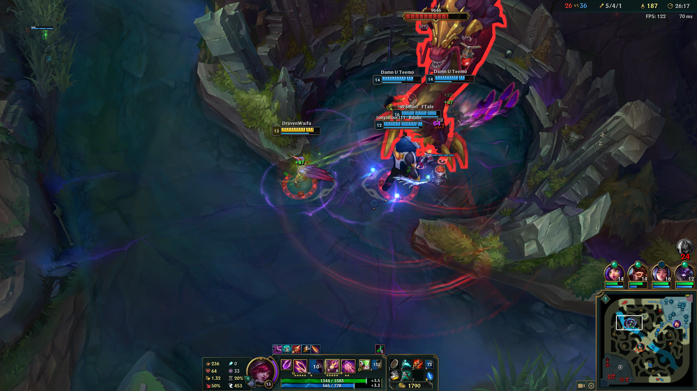
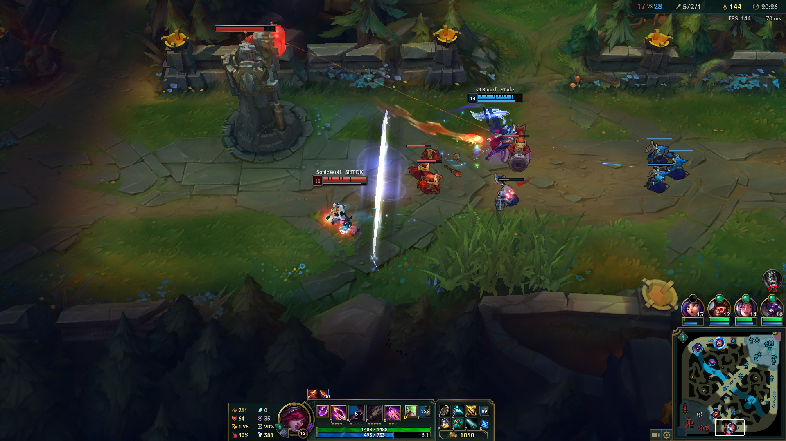
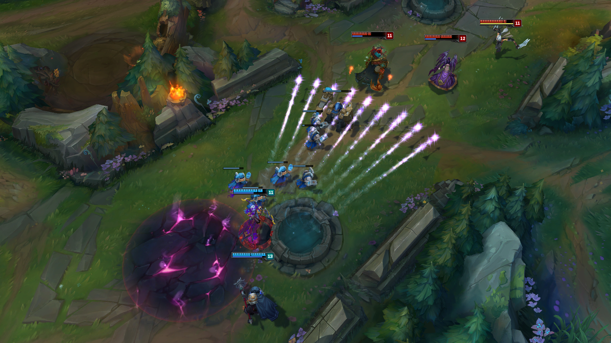
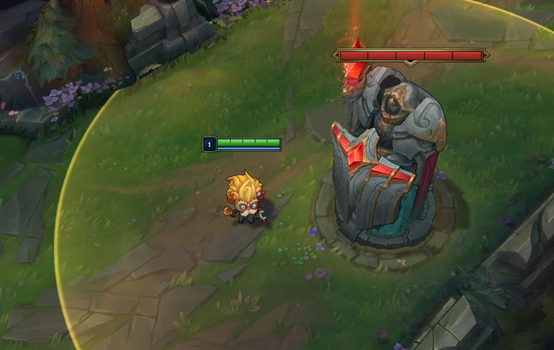
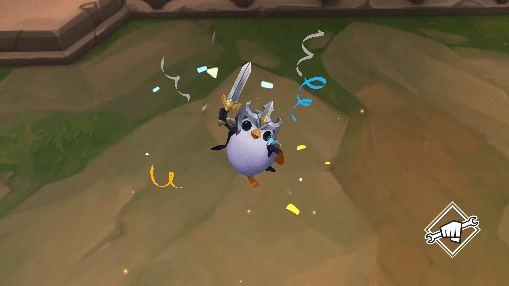

Riot Games was founded by Brandon Beck and Marc Merrill in 2006, who met in college while studying business. They bonded over video games, and this is how their friendship (and eventually business) began.
Brandon and Marc believed there was a gap in the market at the time. They thought companies focused too much on pumping out new games, instead of maintaining and constantly updating one, well known game.
From this, League of Legends was born.
- League of Legends is completely free to play - any in game purchases are optional (skins, boosts, etc)
- When Riot Games first began, and League was first made, servers often went down as their team was so small.
- As of 2018, Riot Games have 2,500 employees and 24 offices worldwide.
- Many say League of Legends primarily grew due to the loyalty of the fanbase, and due to the fact it is a free to play game.




